my treasure box
－1999/3/4－
いったん清水に戻った私は次に金沢を目指しました。昨日の房総半島と対照的に、雪深く寒いところを通らなければなりません。出かける前に下関在住の友人Ｍ．Ｙ．氏にロングドライブの極意を教わり、ガソリン満タンでいざ出発です。さすがにチェーンが必要になるかな？と思いましたが、道は少し凍結しているぐらいで乾いています。これなら、根尾谷も白川郷もいけそうです。
| ○静岡県清水市 発 |
| ＝＞ 国道１５０号線 －＞ 国道１号線 －＞ 国道２４８，１５５号線 －＞ 国道４１８号線 －＞ 国道１５７号線 ＝＞ |
| ○岐阜県根尾村 経由 |
| ＝＞ 国道４１８号線 －＞ 国道２５６号線 －＞ 県道８１号線 －＞ 国道１５６号線 －＞ 国道３０４号線 ＝＞ |
| ○石川県金沢市 着 |
清水市をでてひたすら西へ。途中で浜松でうなぎを食べ、非常に満足。しかし、ここで一日の食費を使ってしまって、以後自粛をこころがける。
その後名古屋の横を抜け山道に入ります。
～岐阜県武芸川町・美山町～
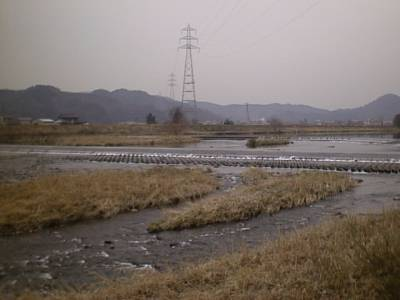
ここは武芸川町。ここまでくると川もきれいです。
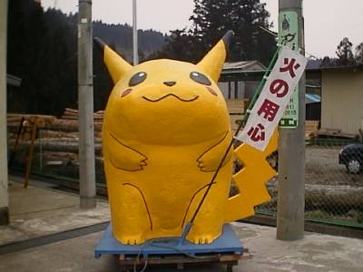
ピカッチュウゥ・・・。・・・。ということで、ここは美山町。これは美山町の消防組合北消防署の前にかざってあった某ピカチ○ウです。あまりにもインパクトがあり思わず撮ってしまいました。
～根尾谷断層～
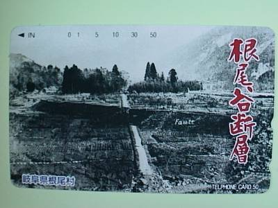
この写真を歴史の教科書でみたことがあると思います。根尾谷断層。昭和２４年１０月２８日に発生した濃尾地震（Ｍ８．０）による地震断層です。ちなみにこの写真は近くにある淡墨温泉で買ったテレホンカードです。
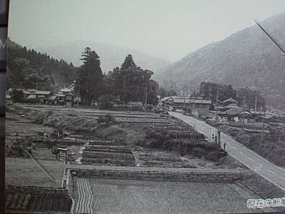
このテレホンカードには現在の根尾谷断層の写真が載っていました。
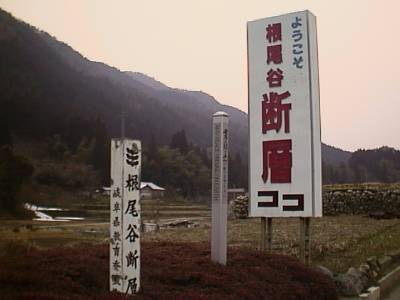
そして、行って来ました。根尾谷断層。
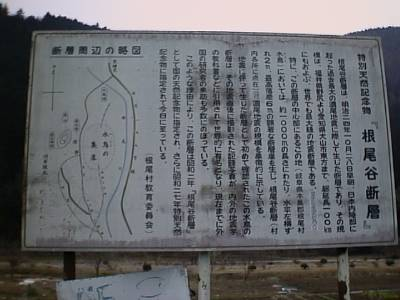
横に説明書きがありました。現在この根尾谷断層は国の特別天然記念物に指定されています。
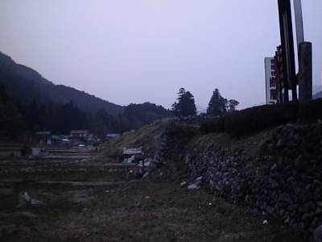
そしてこれが断層になります。濃尾地震により、最大で６ｍの段差が生じました。
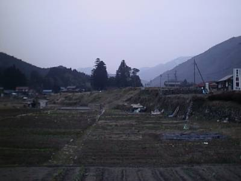
引きの図。この断層は福井から愛知まで約１００ｋｍにも及びます。
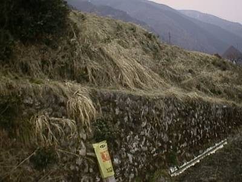
接近の図。石垣状になっています。
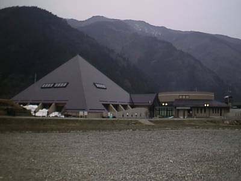
隣には資料館があります。
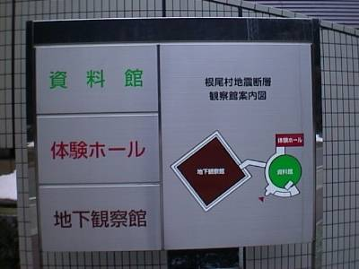
この資料館の案内図です。ここにくるのが遅くなってしまったため、中に入ることはできませんでした。残念。
～淡墨公園～
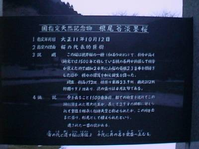
根尾谷の近くには同じく天然記念物に指定されている淡墨桜（うすずみざくら）というものがあり、それを見に淡墨公園に行って来ました。これが淡墨桜の隣にある説明書きです。
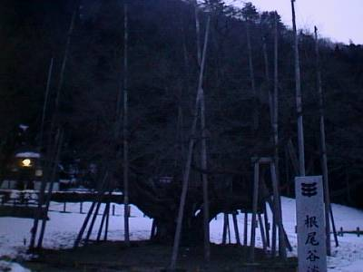
これが淡墨桜です。ちょっと時間が遅くなり、暗めの写真になっています。しかし、大きいです。
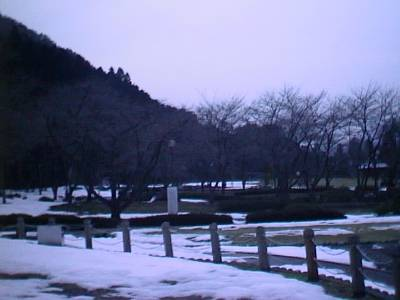
周りには沢山の桜が植わっていました。春は淡墨桜と相まって、かなり素晴らしい場所になりそうです。
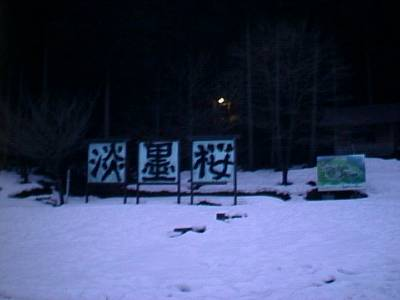
淡墨桜のそばにあった看板群です。まだまだ雪が多く、見ただけで寒そうです。
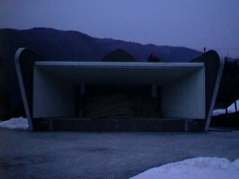
この近くには、なぜか野外ステージがありました。ステージの上には藁が積まれています。この季節なので当然でしょう。
～淡墨温泉～
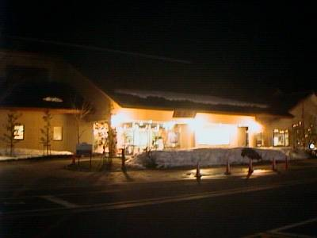
近くに「淡墨温泉」というのがあったので行ってみました。この辺りは山深く、どうせしがない温泉街だろうなあと思っていました。ところが、こんな立派なホテルａｎｄ温泉館が・・・。唖然。なんでこんなところに・・・。といったら失礼ですね。この温泉は豪華で泡風呂から五右衛門風呂、スチーム風呂、サウナ風呂と設備が整っていました。堪能。
正直な話、根尾の人たちには申し訳ないのですが、この近辺には根尾谷断層しか名物がないと思っていました。ところが、淡墨桜、淡墨温泉。そして他にも天然記念物の菊花石というものがあります。写真はありませんが、かつての火山活動によって岩の上に菊の模様があらわれている石です。きれいです。あなどりがたし・・・。
～１５６号線～
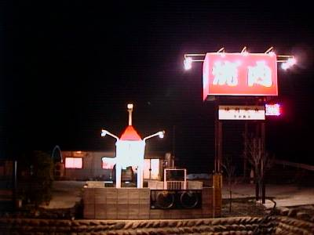
金沢までの道のりはほとんど１５６号線を使いました。ところが、根尾からのルートだと県道や国道までもがほぼ積雪のため通行止めで、ちっとも１５６号線にたどり着けません。２時間ほど後戻りすれば行けるのですが・・・。しびれをきらし、近くにあった焼き肉屋「東陽」に近道を尋ねてみました。そこのおじさんからいずれにしても戻らなければならないことを知りました。せっかく道を尋ねたので、昼にウナギを食べたことも忘れ、焼き肉を食べてきました。そこのおじさんとおばさんに事の経緯を話しました。食べ終わると、ご飯の分のお金をまけてもらい、おまけにガムまでもらってしまいました。ありがとう、おじさんおばさん！！
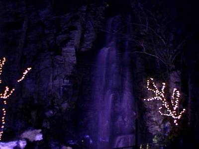
１５６号線の道すがら、写真のような滝を見つけました。その名も「駒ヶ滝」。青色のスポットライトで照らされ非常に幻想的でした。
～白川郷～
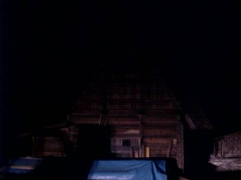
１５６号線沿いにある世界遺産の白川郷の合掌村を見てきました。完全に夜になってしまったため、失礼だとは思いながらも車のヘッドライトを一瞬だけ当て、写真におさめてきました。かなり暗めですがご容赦を。
なんとか無事に金沢市にたどり着くことができました。